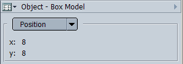
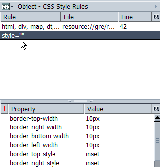

Box and Style Info

The box parameter (offset and dimension),
margin
,
border
and
padding
are usefull for debugging size and position problems

The style parameter shows all style rules are applied to each node and also the origins of these rules.